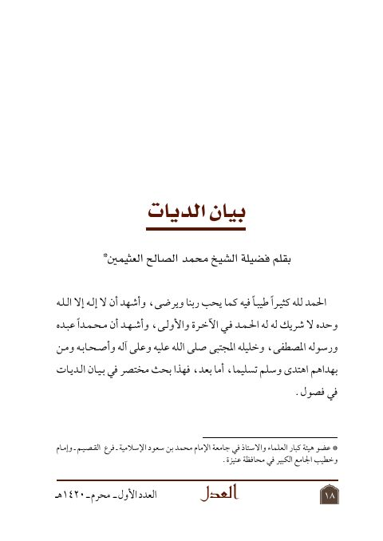

Downloads need an internet connection.
بيان الديات
Authors: محمد بن صالح العثيمين
Publishers: مجلة العدل
**▫️ العنوان: بيان الديات** ▪️ المؤلف: #محمد_الصالح_العثيمين ▫️ الناشر: #مجلة_العدل ▪️ تاريخ النشر: 1420هـ 1999 م ▫️ بلد النشر: الرياض، #السعودية ▪️ الطبعة: 1 ▫️ عدد الأجزاء: 1 ▪️ الصفحات: 22 ▫️ نوع الوعاء: #بحث ▪️ التصنيف الرئيسي: #الفقه_وأصوله ▫️ التصنيف الفرعي: #الجنايات_والديات ۪